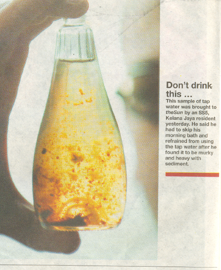

The most common filtration systems in the market are either systems that use a combination of sand, small pieces of crystal, small pebbles with granulated carbon or ceramic with granulated to block carbon. These systems will remove any floating particles that are floating in the water. Some of the pores are quite fine as they are much smaller than the width of the human hair. With such small pores, it is easy for anyone to feel that the filters are effective but we must understand that the molecules of most toxic contaminant are very much smaller than these pore and as a result, most contaminants will be just be unfiltered. While the carbon may remove volatile chemicals like chlorine and gasses, they are not effective against many chemicals. It is ineffective against arsenic, nitrates, cadmium, mercury, and heavy medal. Sand, peddles, crystals or certain filters as these filters cannot absorb the contaminants. They are no absorbing properties. They are only effective in getting rid of floating particles and the must mud content to a certain extent and for a very short period of time. The ceramic filter is very effective in this area; however it has to be cleaned very often or it will get clogged up too. The more effective the filter, the faster it gets clogged up. However, it is not effective in filtering out other contaminants, chemicals that are dissolved in the water and inorganic minerals.
Contaminants and residues are left behind after water evaporated. These contaminants are accumulated by every distillation process. You couldn’t scratch it out by your hand. You couldn’t clean it off by using sponge. You only can use particular cleansing to remove it.
Many people believe that we need minerals and it is immaterial whether the minerals are organic (come from food to plants or things that have life) or inorganic (come from things that do not have life). It is not surprising that some food companies add iron fillings obtained from scrap metal that are collected from car dumps to food like cereals and milk powder. They believe the iron is good for us. I do not believe that iron filings from non-organic metal products can be assimilated by the human body. Likewise, inorganic calcium carbonate from limestone is added to milk and chocolate powder for various reasons. It is added with just cocoa powder.
Secondly, they can advertise and say that there is added calcium for strong bones. I would rather take my minerals from organic matter. Minerals from our drinking water are inorganic in nature. It is practically dissolved sand and stones. Inorganic minerals in our drinking water are one of the most destructive contaminants in our drinking water. They are related to so many diseases like heart diseases, strokes, kidney stones, diabetes, cancer, loss of memory, loss of eyesight and hearing and so on. The biggest myth about distilled water is that it is lack of minerals. While we all need minerals, we need only organic minerals which are derived from foods. Minerals found in the water are inorganic in nature and have no life in it. If we have to depend on water for our daily required minerals instead of our diet, we would be so malnourished that we would have many medical problems. The only way our body can obtain enough minerals is through food and not water. It is impossible to sustain life with minerals that is obtained from water alone.
All water comes from rain, and rainwater has no minerals. When the rainwater falls to the ground, it dissolves the sand, stones and soil. The calcium in the soil is basically carbonate. Calcium carbonate is also known as limestones; it is used to manufacture cement for their hardening properties. It is this hardening property that makes it so hazardous to our health. When the calcium hardens our arteries and clogs up our hearts, we would have heart diseases. When we are born, our arteries are soft and flexible like rubber. The day we start drinking water that contains calcium, it is the day that calcification starts.
●‘Our filters remove 99.99% contaminants’
● ‘Our filters give you our water.’
● ‘Our filters remove the bad stuff and retain the good stuff.’
● ‘Distilled water is too pure.’
● All of the above are fiction . No filters can remove 99.99% contaminants. No filters can produce pure water. No filters or any water purification system has detection system to detect what is good and what is bad, let alone separate them. There is no such thing as too pure. It is either pure or impure.
1. It is water that’s been turned into vapor so that its impurities are left behind. Upon condensing, it becomes pure distilled water.
2. It is the only type of water which meets the definition of water; hydrogen + oxygen.
3. It is a perfectly natural healthy water.
4. It is odorless, colorless and tasteless.
5. It is free of virtually all inorganic minerals, including salt.
6. It is the only natural solvent that can be taken into the body without damage to the tissues.
7. It acts as a solvent in the body by dissolving nutrients so they can be assimilated and taken into every cell.
8. It dissolves the cell wastes so the toxins can be removed.
9. It dissolves inorganic mineral substances lodged in the tissues of the body so that such substances can be eliminated in the process of purifying the body.
10. It does not leach out organic body minerals but collects and removed the toxic inorganic minerals which have been rejected by the cells
11. It is indeed the most ideal and beneficial water for all humans and also for animals.
12. It leaves no residue of any kind when it enters the body.
13. It is the most perfect water for the healthy functioning of those great miracle sieves, the kidneys.
14. It is the perfect liquid for the blood.
15. It is the ideal liquid for efficient functioning of the lungs, stomach, liver and all other vital organs.
16. It is universally accepted as the standard for biomedical applications and for drinking water purity.
17. It is so pure that all drug prescription are formulated with distilled water.
18. It is fresh, clean and pleasing to the palate.
19. It makes foods and drinks prepared with it taste noticeably better. The flavor is subtle enough not to interfere with the food it is mixed with.
20. It is the only pure water left on our polluted planet!
21. Remember - Distilled water is the healthiest water and the greatest natural water on earth!
One of the most remarkable miracles about the human body is its ability to repair and heal itself! For example, if you cut yourself, your body heals the cut. If you break a bone, the body heals the bone after it’s set and often it becomes stronger than before. Unexpected injury may happen at any time and to anyone! However, if you have been taking care of your body, chances are you will recover more quickly and with less discomfort. The less obvious injuries that we accumulate over time may also be repaired by the amazing human body. After taking a hammering for years, after being totally neglected for too long, your body can experience astounding recovery and rejuvenation! You must be prepared to be patient and generous with your time and effort. Just as a business that has been allowed to slip, can be rebuilt. So can a neglected body! Don’t expect a miracle overnight - Rome wasn’t built in a day. It takes time and dedication to rebuild broken health. - from Bragg’s book